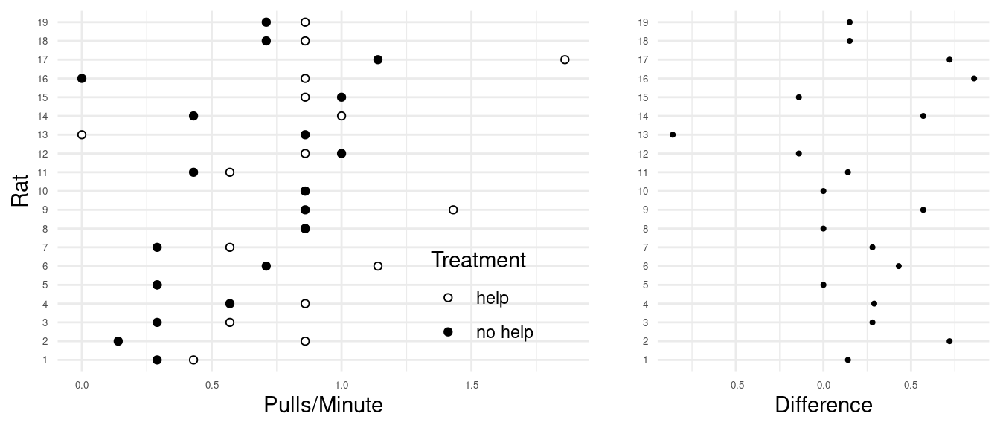

You can also download a PDF copy of this homework assignment.
Instructions: These homework problems will help familiarize you with the process of conducting a statistical test concerning \(\mu\). For each problem conduct four steps of the statistical test (state the hypotheses, compute test statistic, compute p-value, make a decision — you can skip checking the sample size and distribution). Use a significance level of \(\alpha\) = 0.05 for all tests. The solutions are given at the end.1
Recall Charles Darwin’s study that compared the heights of corn seedlings produced by cross-fertilization with those produced from self-fertilization.2 He used a matched-pairs design that is not unlike the twin study of schizophrenia discussed in class. Pairs of seedlings were collected from the same parent plant, but one was produced from cross-fertilization and the other was produced from self-fertilization. To compare the seedlings we can compute the difference in height between the seedlings within each pair — specifically the height of the seedling produced from cross-fertilization minus that of the seedling produced from self-fertilization. The figure below shows the distribution of the height differences for the 15 pairs of seedlings. Darwin’s motivation for this study was to show that cross-fertilization tends to result in plants that are more fit than self-fertilization. If this is true then it would be expected that the seedlings produced by cross-fertilization would be taller, on average, than those produced by self-fertilization. The data appear to support this claim as the mean difference is about 2.62 inches, although there is some variation in the difference as shown by the standard deviation of 4.72. Conduct a statistical test to determine if there is evidence that corn seedlings produced by cross-fertilization are taller, on average, than those produced by self-fertilization.
This problem is based on data from a study of generalized reciprocity.3 Reciprocity is when an organism helps another organism in return for that organism helping them. Generalized reciprocity is when the organism that was helped helps another organism, but not the organism from which they received help. Rats were trained to learn that they could pull a lever that would “help” another rat by providing a small bit of food. The study then used a cross-over design to observe the number of pulls per minute made by each rat under each of two treatment conditions: one where the rat had recently received help from another rat (by provided it food using the same mechanism), and another where the rat had not recently received such help. The order of the treatments was randomized and the observations made under the two treatment conditions were separated in time. The figures below show the number of pulls per minute for each rat under each treatment condition, as well as the difference in the number of pulls per minute (pulls per minute in the help condition minus the pulls per minute in the no help condition).  There is what appears to be a tendency for rats to pull the level more frequently after they have been helped, but it is not (yet) clear if this is a statistically significant result. The mean difference in pulls per minute is about 0.22 pulls per minute, and the standard deviation is about 0.39 pulls per minute based on a sample of 19 observations. If rats exhibit generalized reciprocity then they should pull more often, on average, after they have been recently helped themselves. Conduct a statistical test to determine if there is evidence of generalized reciprocity.
| Player | round | wide | Difference |
|---|---|---|---|
| 1 | 5.4 | 5.55 | -0.15 |
| 2 | 5.85 | 5.75 | 0.1 |
| 3 | 5.2 | 5.5 | -0.3 |
| 4 | 5.55 | 5.4 | 0.15 |
| 5 | 5.9 | 5.7 | 0.2 |
| \(\vdots\) | \(\vdots\) | \(\vdots\) | \(\vdots\) |
| 22 | 6.3 | 6.25 | 0.05 |
(Note: The running times are the average of two runs between a point 35 feet from home plate to a point 15 feet short of second base.) For the sample of observations, the mean difference is 0.08 seconds, and the standard deviation is 0.15 seconds. Is a mean difference of 0.08 seconds statistically significant?
A study published in Psychological Science investigated the effect of cell phone use on reaction time in a simulated driving task.5 That study used two separate groups of subjects. We will discuss how to make inferences from such a design later. Here we will consider a similar but fictional study that instead used a cross-over design. Suppose that 32 subjects were each put through two treatments. In each treatment the subject was required to attend to a task on a computer that requires that they react to events during the task. This task is designed to simulate the level of attention necessary for driving. In the control condition the subjects listened to a radio station or audiobook of their choice. In the other condition the subjects were required to engage in a conversation with another person on a phone. The order in which the subjects went through the two treatment conditions was randomized, and the two sessions were separated by several days. The researchers recorded the mean reaction time during the simulated driving task for each subject under each condition. To compare the two conditions we can compute the difference in mean reaction time between the two conditions (reaction time during the phone condition minus that during the control condition). The mean difference was about 62.8 msec, and the standard deviation was 109.4 msec. Conduct a statistical test to determine if there is evidence of a statistically significant difference in reaction time between the two treatment conditions.
Here we can let \(\mu\) denote the mean difference in seed height in the population distribution of observations. Appropriate hypotheses would then be \(H_0\!:\mu=0\) and \(H_a\!:\mu > 0\). The one-sided test seems justified here because Darwin believed that seedlings produced by cross-fertilization would be taller, on average, than those produced by self-fertilization. The observed value of the test statistic is approximately 2.15 which yields a p-value of approximately 0.025. For a two-sided test the p-value would be twice as large as that for the one-sided test. The decision would be to reject the null hypothesis since the p-value is not larger than the significance level, and so we would conclude that the fact that the mean difference in seedling height is greater than zero is statistically significant. The study and analysis support the claim that cross-fertilization results in taller corn seedlings, on average, in comparison to self-fertilization.
Here we let \(\mu\) denote the mean difference in pulls per minute between the help and no help treatment conditions in the population distribution of observations. Appropriate hypotheses would then be \(H_0\!: \mu = 0\) and \(H_a\!: \mu > 0\). If generalized reciprocity is exhibited by rats then the level pulling frequency would be higher in the help treatment condition so the one-sided test seems reasonable, although you could have considered a two-sided test with \(H_a\!: \mu \neq 0\). The observed value of the test statistic is approximately 2.46 and the p-value is approximately 0.012. For a two-sided test the p-value would be twice as large. Since the p-value is less than \(\alpha\) our decision is to reject the null hypothesis and conclude that the mean difference in pulls per minute is statistically significant. This study and analysis does suggest that rats exhibit generalized reciprocity.
Let \(\mu\) be the mean difference in running time between the round and wide routes for a population distribution of observations. Appropriate hypotheses would then be \(H_0\!: \mu = 0\) versus \(H_a\!: \mu \neq 0\). A two-sided test is being used here since we do not have any information about what route might be faster. The observed value of the test statistic is approximately 2.5. The p-value is then approximately 0.02. This would lead us to reject the null hypothesis and conclude that the fact that the mean difference in running times is greater than zero is statistically signficiant. We would conclude that the running time for the round route is, on average, longer than the wide route.
We can let \(\mu\) denote the mean difference in reaction time for the population distribution. Appropriate hypotheses would be \(H_0\!: \mu = 0\) and \(H_a\!: \mu > 0\). It seems reasonable to use the one-sided alternative with the expectation that if cell phone use has any effect it would increase reaction time, but you could also have used \(H_a: \mu \neq 0\). The value of the test statistic is approximately 3.25. For the one-sided test the p-value would then be approximately 0.001. For a two-sided test the p-value would be twice as large. Since the p-value is less than \(\alpha\), the conclusion would be to reject the null hypothesis. The different in mean reaction time is statistically significant. The results of the study and the analysis suggest that cell phone use does increase reaction time on average.
In the solutions the reported values of test statistics and p-values have been rounded to the second and third decimal place, respectively. Rounding was only done for the final reported values. It was avoided in intermediate calculations (e.g., the value of the test statistic used to compute a p-value was not rounded).↩︎
Darwin, C. (1876). The effect of cross- and self-fertilization in the vegetable kingdom (2nd ed). London: John Murray.↩︎
Rutte, C. & Taborsky, M. (2007). Generalized reciprocity in rats. PLoS Biol, 5(7): e196. doi:10.1371/journal.pbio.0050196.↩︎
Woodward, W. F. (1970). A comparison of base running methods in baseball. MSc Thesis, Florida State University.↩︎
Strayer, D. L. & Johnston, W. A. (2001). Driven to distraction: Dual-task studies of simulated driving and conversing on a cellular telephone. Psychological Science, 12(6), 462–466.↩︎